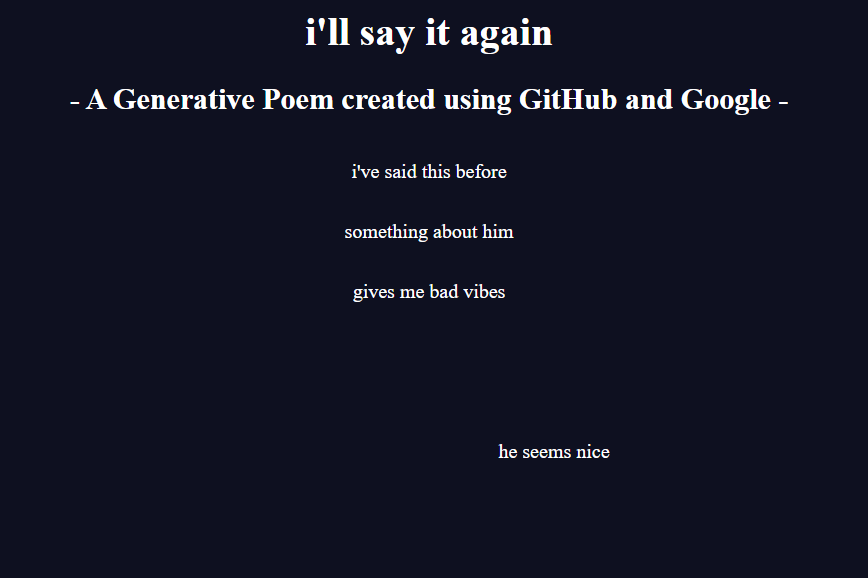

KAM
MARKSTEINER
Kam is a second-year student at the University of Illinois-Chicago.
During the Spring 2022 semester, Kam took a class in class on Digital Practices in Art and Design taught by Jared Christopher Kelley. In this class, she explored many ideas relating to the concept and creation of internet art.
This portfolio is a collection of some of the projects she worked on during that semester.
Coming Home Game

Generative Poem

Green Screen Project